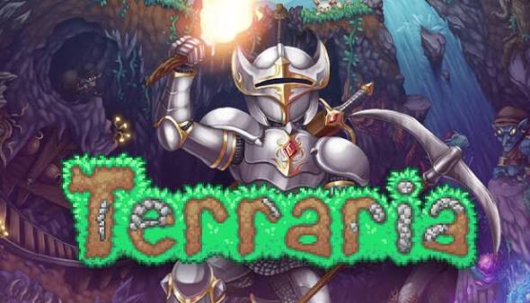

🎮 Par spēli
Terraria ir 2D piedzīvojumu, izdzīvošanas un būvēšanas spēle, ko izstrādāja Re-Logic. Tā tika izlaista 2011. gada 16. maijā operētājsistēmai Windows un vēlāk tika portēta uz daudzām citām platformām.
Spēle notiek procedurāli ģenerētā pasaulē, kurā spēlētājs sāk ar minimāliem resursiem un pakāpeniski attīstās, iegūstot labākus ieročus, bruņas un instrumentus.
Terraria apvieno elementus no vairākiem žanriem: platformeru, RPG, sandbox un izdzīvošanas spēļu. Katru spēles fāzi (Pre-Hardmode un Hardmode) atklāj jauns saturs, biomi un bosu cīņas.
Spēlei ir milzīga kopiena un tā regulāri saņem bezmaksas satura atjauninājumus no izstrādātājiem.

📊 Statistika
⏳ Spēles vēsture
- 2011 – Terraria tiek izlaista Steam platformā par $9.99. Spēle uzreiz kļūst populāra.
- 2012–2013 – Lielas atjauninājumu versijas pievieno jaunus biomus, ieročus un NPC.
- 2015 – Izlaists atjauninājums 1.3, kas pievieno Moon Lord bosi un Expert Mode.
- 2019 – Portēšana uz mobilajām ierīcēm (iOS un Android) ar pilnu saturu.
- 2020 – Izlaists "Journeys End" (1.4) – lielākais atjauninājums, kas pievienoja Journey Mode un daudz vairāk.
- 2022–2024 – Papildu atjauninājumi (1.4.4, 1.4.5) turpina pievienot jaunu saturu.
🕹️ Spēles mehānika
Ieguves sistēma
Iegūsti resursus, rokot zemi un alas. Koks, akmens, dzelzs, zelts – viss ir vajadzīgs izdzīvošanai.
Būvēšana
Būvē mājas NPC uzņemšanai, cietokšņus un mākslas darbus. Spēle atbalsta radošu brīvību.
Kaujas sistēma
Izmanto ieročus, burvju stafus, loku ar bultām vai jojo – katrai klasei ir savs stils.
Alķīmija & Izveide
Izveido dzērienus, bumbiņas un priekšmetus, izmantojot recepšu sistēmu ar dažādiem darba galdiņiem.